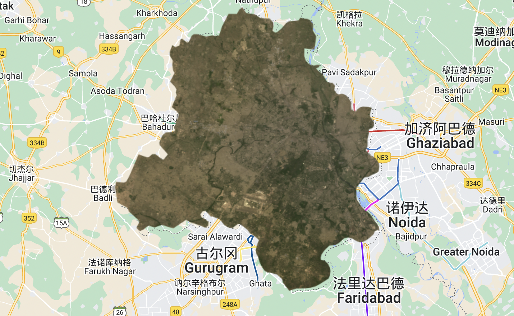
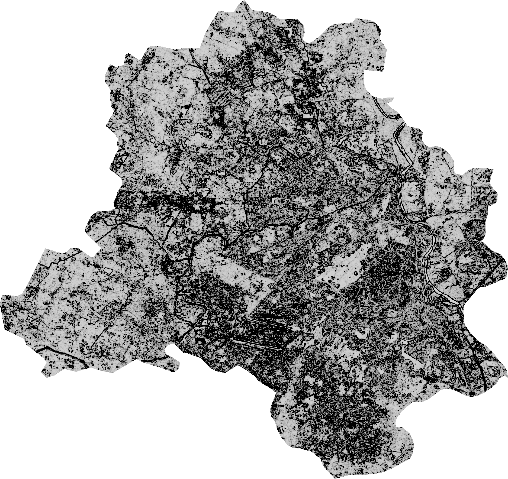

Google Earth Engine Basic Knowledge
5.1 Summary
5.1.1 Google Earth Engine Introduction
Google Earth Engine is a cloud-based platform for processing and analyzing geospatial data. It combines vast repositories of satellite imagery and other geospatial data with powerful processing tools to enable users to perform complex analysis and generate dynamic visualizations of the Earth’s surface. With its ability to process petabytes of data quickly and efficiently, Google Earth Engine has become an essential tool for scientists, researchers, policymakers, and anyone who is interested in understanding our planet and its environment. Its innovative features and accessibility have made it an important player in the fields of ecology, conservation, urban planning, and disaster response. Google Earth Engine is a game-changer in the world of geospatial analysis and has the potential to transform the way we understand and interact with the world around us.
5.1.2 Difference between Client and Server
Difference
| Aspects | Client | Server |
|---|---|---|
| Function | Interact and visualize geospatial data | Provide computational power and storage |
| Usage | Basic analysis and visualization | Access and process data programmatically |
| Interface | Web-based interactive | No graphical interface |
| Processing | Client-side | Server-side with distributed computing |
Here are some examples of projects where GEE applications have been implemented.
(Source: Andrew Maclachlan)
ServerGEE Server provides APIs for developers to access and process data programmatically.
5.1.3 GEE API
5.1.3.1 JavaScript
Gee coding based on JavaScript, this is almost all of the Javascript you need to know:
var number = 1
var string = 'Hello, World!'
var list = [1.23, 8, -3]
print(list[2])
var dictionary = {
a: 'Hello',
b: 10,
c: 0.1343,
d: list
}
print(dictionary.b)
print(number, string, list, dictionary)(Source: Andrew Maclachlan)
Some of the basic geospatial data processing steps in GEE and the functions that go into them are as follows:
| Geospatial Processing Steps | Geospatial Processing Functions |
|---|---|
| Image | band math, clip, convolution, neighborhood, selection |
| Image Collection | map, aggregate, filter |
| Feature | buffer, centroid, intersection, union, transform |
| Feature Collection | aggregate, filter, flatten, merge, sort |
| Filter | by bounds, within distance, date, day-of-year, metadata |
| Reducer | mean, linearRegression, percentile, histogram |
| Join | simple, inner, outer, inverted |
| Kernel | square, circle, gaussian, sobel, kirsch |
| Export | to geotiff, to video, to TensorFlow, to map tiles |
| Machine Learning | CART, random forests, baes, SVM, kmeans, cobweb |
| Projection | transform, translate, scale |
Common basic operations and syntax. Source: youtube.com/watch?v=I-wFYm4Hnhg
5.1.3.2 GEE Code Editor
5.2 Application
5.2.1 GEE Basic operations
Here are some of the basic operations I perform in gee, including loading image data, scaling images, mosaicing images, clipping images, and texture analysis, pca analysis, etc.
my code link: https://code.earthengine.google.com/2d91d811e683d25ff8f3e71a16a8046c
A series of image enhancement processes

clipping images

texture analysis
GLCM texture analysis describes the texture information in an image by calculating a matrix of co-occurrence of the grey levels of pixels around the same pixel. This texture information can in turn be used to reflect the surface texture, shape, size and other features of the feature, thus providing the base data for subsequent analysis and applications.

pca analysis
Principal component analysis (PCA) was performed on a GLCM (grey scale co-occurrence matrix) image of India using Google Earth Engine (GEE) with the following process:
 of GLCM image in GEE.png)
By performing PCA on a GLCM image of India, we can identify the principal components that explain the most variance in the image. These components can then be used to create a new image that captures the essential features of the original image while removing any noise or redundant information.And it helps to reduce the dimensionality of large datasets.

5.2.2 Examples
Texture AnalysisLi et al. (2019) used GEE to perform texture analysis on Sentinel-2 imagery for mapping vegetation cover in the Tibetan Plateau. They applied gray-level co-occurrence matrix (GLCM) and local binary patterns (LBP) to extract texture features from the satellite imagery. Then, they used a random forest algorithm to classify the vegetation cover based on these texture features. The results showed that texture analysis improved the classification accuracy compared to using spectral bands alone. This study suggests that texture analysis can be a useful tool for mapping vegetation cover in high-altitude areas.
Principal Component AnalysisGao et al. (2019) used GEE to perform PCA on Sentinel-2 imagery for mapping land cover in the Three Gorges Reservoir Area, China. They applied PCA to reduce the dimensionality of the multivariate data and extract the most important information. Then, they used a support vector machine (SVM) algorithm to classify the land cover based on the principal components. The results showed that PCA improved the classification accuracy compared to using all the spectral bands. This study suggests that PCA can be a useful tool for mapping land cover in complex areas with diverse land cover types.
ConclusionIn conclusion, texture analysis and PCA are powerful tools for analyzing satellite imagery in urban or ecological environments. Texture analysis can extract spatial patterns and improve classification accuracy, while PCA can reduce dimensionality and extract the most important information. By using these techniques, researchers can better understand and manage urban or ecological environments, ultimately contributing to the protection and preservation of these areas.
5.3 Reflection
In learning to use Google Earth Engine (GEE), I have found that it has many advantages. Firstly, GEE provides easy access to data and processing tools, making it easy for users to work with remote sensing data in the cloud without having to download and store large amounts of data locally. Secondly, GEE provides a wealth of remote sensing data, tools and algorithms that users can write code in JavaScript to use for data analysis and visualisation. In addition, GEE’s code is sharable, which allows users to share their code and collaborate with others on data analysis and model building. Finally, GEE supports large-scale data processing and distributed computing, allowing users to work with large amounts of data more efficiently.
During my studies, I learnt a lot about GEE operations, some of which include data acquisition, data pre-processing, image analysis and visualisation. For example, in data acquisition, I learnt how to acquire remote sensing data such as Sentinel-2, Landsat and MODIS from the GEE data repository and load them into code for analysis. In data pre-processing, I learnt how to perform pre-processing operations such as image cropping, image stitching, image reprojection and image de-clouding. In image analysis, I learnt how to perform operations such as remote sensing classification, texture analysis and principal component analysis.
In practice, I found that sometimes the code execution did not work or the analysis results were not as expected, when I would try to review the code and data to find out what might have gone wrong, and debug and improve it. At the same time, I also think about why things are going wrong and try to understand the root of the problem so that I can better avoid such problems in the future.
I agree that GEE is a powerful tool for analyzing remote sensing data, and it offers many advantages over traditional methods such as R or SNAP. However, I also believe that there are certain limitations to GEE that need to be addressed. For instance, while GEE can handle large datasets, it requires a stable internet connection, which may not be available in some areas. Additionally, GEE is a cloud-based platform, which means that the user has little control over the hardware and software used for processing the data. This could potentially lead to issues with data security and privacy.
Li, Z., Feng, X., Zhang, L., Lv, G., Zhou, X., & Liu, Q. (2019). Mapping Vegetation Cover in the Tibetan Plateau Using Texture Analysis of Sentinel-2 Imagery. Remote Sensing, 11(15), 1817.
Gao, Y., Zhang, Y., He, M., & Wu, J. (2019). Mapping Land Cover in the Three Gorges Reservoir Area with Sentinel-2 Imagery Using Principal Component Analysis and Support Vector Machine. Remote Sensing, 11(23), 2829.